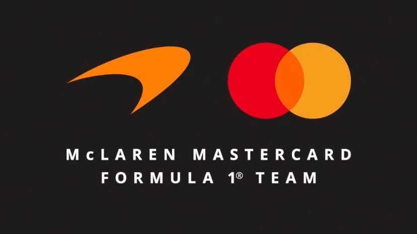

El nacimiento de McLaren
McLaren fue fundada en 1963 por el piloto neozelandés Bruce McLaren. La organización comenzó participando en diferentes categorías del automovilismo y rápidamente empezó a destacar por su innovación y capacidad técnica.
El debut en Fórmula 1
McLaren debutó oficialmente en el Campeonato Mundial de Fórmula 1 en 1966. Bruce McLaren fue uno de los primeros pilotos en representar al equipo, mientras la escudería comenzaba a desarrollar sus propios monoplazas.
La primera victoria
La primera victoria de McLaren en Fórmula 1 llegó en 1968, cuando Bruce McLaren ganó el Gran Premio de Bélgica en Spa-Francorchamps. Este triunfo convirtió a McLaren en uno de los pocos equipos capaces de ganar una carrera utilizando un monoplaza construido por ellos mismos.
La época de Emerson Fittipaldi
Durante la década de 1970, McLaren comenzó a consolidarse como una de las principales escuderías de la Fórmula 1. En 1974, el brasileño Emerson Fittipaldi consiguió el Campeonato Mundial de Pilotos con McLaren.
Ese mismo año, McLaren consiguió también su primer Campeonato de Constructores, iniciando una etapa de mayor éxito para el equipo.
El dominio de Alain Prost y Ayrton Senna
Una de las épocas más recordadas de McLaren ocurrió durante finales de los años 80 y principios de los 90, especialmente con la rivalidad entre Alain Prost y Ayrton Senna.
Senna consiguió tres Campeonatos Mundiales de Pilotos con McLaren en 1988, 1990 y 1991. Durante este período, el equipo dominó gran parte de la Fórmula 1 gracias a sus monoplazas diseñados por un equipo técnico de primer nivel y a sus motores Honda.
La era de Mika Häkkinen
McLaren volvió a conquistar el Campeonato Mundial de Pilotos a finales de los años 90 con Mika Häkkinen. El piloto finlandés consiguió los títulos de 1998 y 1999.
En 1998, McLaren también consiguió el Campeonato de Constructores, demostrando nuevamente su capacidad para competir por los títulos más importantes de la categoría.
La llegada de Lewis Hamilton
En 2007, Lewis Hamilton debutó en la Fórmula 1 con McLaren. Desde su primera temporada demostró un gran nivel competitivo y terminó como subcampeón mundial.
En 2008, Hamilton consiguió su primer Campeonato Mundial de Pilotos con McLaren después de una de las temporadas más emocionantes de la historia de la Fórmula 1.
Una etapa de dificultades
Durante la década de 2010, McLaren atravesó diferentes dificultades deportivas. La escudería tuvo problemas para mantener el mismo nivel de competitividad que había mostrado durante sus épocas más exitosas.
Entre 2015 y 2017, McLaren utilizó motores Honda y posteriormente cambió a Renault. Aunque el equipo logró algunos resultados destacados, todavía estaba lejos de luchar regularmente por victorias.
La etapa con Carlos Sainz y Lando Norris
En 2019, McLaren inició una nueva etapa con Carlos Sainz y Lando Norris como pilotos. El equipo comenzó a recuperar competitividad y terminó cuarto en el Campeonato de Constructores.
En 2020, McLaren consiguió nuevamente la tercera posición en el Campeonato de Constructores, demostrando que el equipo estaba recuperando su lugar entre las escuderías importantes de la Fórmula 1.
El regreso a las victorias
En 2021, Daniel Ricciardo consiguió la victoria en el Gran Premio de Italia en Monza. Lando Norris terminó segundo, logrando un histórico doblete para McLaren.
Esta victoria fue especialmente importante porque significó el regreso de McLaren a lo más alto del podio después de varios años sin ganar una carrera.
El crecimiento de Lando Norris
Lando Norris se convirtió progresivamente en el piloto principal de McLaren. Durante las temporadas siguientes consiguió múltiples podios y victorias, demostrando que podía competir contra los mejores pilotos de la parrilla.
McLaren campeón nuevamente
Después de varios años de desarrollo, McLaren volvió a luchar por los campeonatos. El equipo consiguió recuperar un nivel competitivo que le permitió luchar por las primeras posiciones de manera constante.
La combinación de Lando Norris, Oscar Piastri y un fuerte desarrollo técnico convirtió nuevamente a McLaren en uno de los equipos más competitivos de la Fórmula 1.
Oscar Piastri
Oscar Piastri se incorporó a McLaren en 2023. El piloto australiano rápidamente demostró su potencial y consiguió sus primeras victorias en Fórmula 1 con el equipo.
La pareja formada por Norris y Piastri se convirtió en una de las alineaciones jóvenes más fuertes de la categoría.
McLaren en la actualidad
McLaren continúa siendo una de las escuderías históricas de la Fórmula 1. Su trayectoria incluye numerosos campeonatos, victorias y pilotos legendarios como Ayrton Senna, Alain Prost, Mika Häkkinen y Lewis Hamilton.
El equipo mantiene una fuerte apuesta por el desarrollo tecnológico, la aerodinámica y el talento joven. Con Lando Norris y Oscar Piastri, McLaren busca mantenerse en la lucha por los Campeonatos de Pilotos y Constructores.
El legado de McLaren
McLaren es una de las escuderías más importantes de la historia de la Fórmula 1. Su combinación de innovación, ingeniería y grandes pilotos le ha permitido mantenerse durante décadas como protagonista de la categoría.
El equipo británico continúa trabajando para ampliar su legado y recuperar definitivamente el dominio que tuvo durante algunas de sus épocas más exitosas.